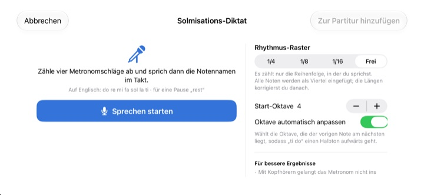
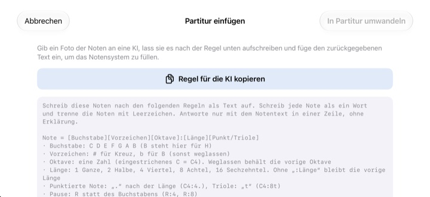

Nicht mehr im Kopf zählen.
Einfach anhören.
Übertrag die zwei Takte, an denen du hängen bleibst, ins Notensystem und drück auf Abspielen. Nach einem Takt Vorzähler spielt StaffSinger sie im Metronomklick ab, mit exaktem Rhythmus und exakter Tonhöhe.
Alle Funktionen kostenlos. Für iPhone und iPad.

Ein paar Noten setzen und anhören
Halte das Notensystem gedrückt, schieb nach oben oder unten, um die Tonhöhe zu ändern, und lass los, um die Note zu setzen. Beim Abspielen kommt erst ein Takt Vorzähler, dann deine Noten. Dreh den Ton auf, die Seite spielt Klänge ab.
Schon wieder mitten im Takt verzählt?
Eine punktierte Achtel, dann eine Sechzehntel, gleich danach eine Triole, und das Klopfen auf dem Knie gerät aus dem Tritt. Oft ist auch kein Klavier in der Nähe, etwa am Abend vor der Probe. Übertrag diese zwei Takte in StaffSinger, und die App spielt sie genau so ab, wie sie dastehen.
Rhythmus und Tonhöhe exakt hören
Nach einem Takt Vorzähler erklingt die Musik zum Metronomklick, und die gerade klingende Note leuchtet orange auf. Das Tempo stellst du zwischen 40 und 200 BPM ein, als Taktart stehen 4/4, 3/4, 2/4, 6/8, 2/2 und 3/8 zur Wahl.
Noten auf demselben Schlag klingen zusammen als Akkord, und du kannst bis zu drei Stimmen schreiben. Violin-, Alt- und Bassschlüssel sowie Vorzeichen sind dabei.

Notennamen singen, Noten bekommen
Nach vier Metronomklicks sagst du do re mi laut im Takt, und sie landen im Notensystem. Sprichst du genau auf den Schlag, wird auch der Rhythmus erfasst, in Vierteln, Achteln oder Sechzehnteln. Für eine Pause sagst du rest.
Die Namen sprichst du auf Englisch: do re mi fa sol la ti. Die Spracherkennung läuft auf deinem Gerät, gespeichert wird nichts.

Foto an die KI, Ergebnis einfügen
Tippe auf Regel für die KI kopieren, gib die Regel zusammen mit einem Foto deiner Noten an eine KI und füg ihre Antwort ein. Schon ist das Notensystem gefüllt. Das Format steht in der Tabelle unten.
Du kannst die gedruckte Seite auch fotografieren und beim Abschreiben auf dem Bildschirm behalten.

In drei Schritten loslegen
- 1
Knifflige Takte aussuchen
Die App startet mit einem leeren Notensystem aus zwei Takten.
- 2
Noten eingeben
Aufs Notensystem drücken oder die Klaviertasten spielen.
- 3
Abspielen
Erst der Vorzähler, dann die Wiedergabe mit Metronom.
Textformat zum Einfügen
- C4:4
- C in Oktave 4, Viertelnote (eingestrichenes C = C4)
- D:8
- Ohne Oktave gilt die vorige weiter
- F#4:8 · Bb4:4
- # für Kreuz, b für Be
- E4
- Ohne :Länge gilt die vorige Länge weiter
- :1 · :2 · :4 · :8 · :16
- Ganze, Halbe, Viertel, Achtel, Sechzehntel
- C4:4.
- punktierte Note
- C4:8t
- Triole
- R:4 · R:8
- Pausen
„Regel für die KI kopieren“ in der App kopiert genau diese Anleitung. Die Buchstaben sind C D E F G A B, wobei B für H steht. Trenn die Noten durch Leerzeichen.
Alles ist kostenlos
Kostenlos
- Eingabe im Notensystem und Klaviertastatur über zwei Oktaven
- Wiedergabe mit Vorzähler und Metronom
- Akkorde und drei Stimmen
- Vorzeichen und drei Schlüssel
- Solmisations-Diktat
- Text einfügen und Referenzfotos
Den Entwickler unterstützen
- Ein kleines Trinkgeld in den Einstellungen geben
- Trinkgeld schaltet nichts zusätzlich frei
Kein Abo. Jedes Trinkgeld ist eine einmalige Zahlung.
Keine Werbung, kein Konto nötig.
Fragen
Wie gebe ich Noten ein?
Wähl zuerst in der Werkzeugleiste einen Notenwert und drück dann auf der gewünschten Tonhöhe ins Notensystem. Solange du hältst, hörst du die Note, beim Loslassen wird sie eingefügt. Über die Tastatur-Taste gibst du Noten stattdessen auf einem Klavier mit zwei Oktaven ein.
Wie erstelle ich einen Akkord?
Schalte in der Werkzeugleiste die Taste Akkord ein und füg Noten hinzu. Sie werden auf die ausgewählte Note gestapelt und erklingen gleichzeitig.
Wie korrigiere ich eine Note?
Zieh eine Note nach oben oder unten, um die Tonhöhe zu ändern, oder zur Seite, um sie auf einen anderen Schlag zu verschieben. Ist eine Note ausgewählt, verschieben die Tasten ♯ und ♭ sie um einen Halbton und die 8va-Tasten um eine Oktave.
Wo ändere ich Tempo oder Taktart?
In den Einstellungen, zusammen mit Schlüssel und Vorzeichen. Dort schaltest du auch Metronom und Vorzähler ein oder aus.
Ich höre nichts.
Prüf den Stummmodus und die Medienlautstärke. Fehlt nur das Metronom, sieh in den Einstellungen unter Wiedergabehilfen nach, ob das Metronom eingeschaltet ist.
Das Diktat erkennt Noten falsch.
Nimm Kopfhörer, damit das Metronom nicht ins Mikrofon gerät, und sprich pro Schlag einen deutlichen Notennamen. Ist eine Note falsch, zieh sie einfach an die richtige Stelle.
Wozu braucht die App die Kamera?
Nur um ein Referenzfoto deiner Noten zu machen und auf dem Bildschirm anzuzeigen. Fotos verlassen nie dein Gerät, und du kannst auch ohne Kamerazugriff ein Bild aus deiner Mediathek wählen.
Auf welchen Geräten läuft die App?
Auf iPhone und iPad mit iOS 17 oder neuer. Sie ist für das Querformat gemacht.
Werden meine Noten oder meine Stimme irgendwohin gesendet?
Nein. Partituren, Fotos und Stimme bleiben auf deinem Gerät, und alles funktioniert offline. Nur anonyme Nutzungsstatistiken und Absturzberichte gehen an iCloud, damit sich Fehler beheben lassen.
Wie erreiche ich dich?
Per E-Mail an leeo@kakao.com. Eine Antwort kommt meist innerhalb von 2 bis 3 Werktagen. Fehlerberichte und Ideen für neue Funktionen sind auch als Issue auf GitHub unter M1zz/StaffSinger willkommen.
Fragen oder Feedback? Schreib an leeo@kakao.com.